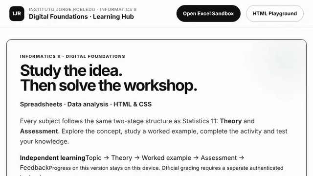

DEMOSTRACIÓN ANIMADA · MIRA EL PROCEDIMIENTO
Observa primero el GIF original de Claude, que se reproduce automáticamente en bucle. Haz clic sobre él para ampliarlo; si necesitas controles y explicación guiada, abre el panel SVG inferior.

GIF ORIGINAL DE CLAUDE · REPRODUCCIÓN AUTOMÁTICA EN BUCLE · HAZ CLIC PARA AMPLIAR
Ver explicación SVG interactiva, con controles y texto guiado
WORKED EXAMPLE
YOUR TURN · HAZLO TÚ